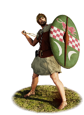
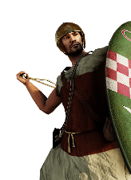

RTR: Imperium Surrectum
RTR: Imperium SurrectumGalato-Pontic Epibatai


Class: missile · Category: infantry · Men per unit: 40
Reforms: Unlocked by Adoption of the Thureos
Description
These marines are Galatians in the service of the kings of Pontos. Their ancestors came to Asia from the Balkans and settled in Phrygia, having served the Northern League which was supported by Mithridates I of Pontos. Now, a contingent permanently fights for his successors. The expansion of the kingdom triggered the need for a fleet, which in turn had to be manned with soldiers. These Celts are experienced warriors and experts in sword fighting. Aside from their long infantry swords, they carry slings and stones. As they may have to jump across ships or even swim, they fight without body armour, only wearing simple clothes. Practical Celtic metal helmets of the Pergamon type protect their heads and their large, wooden thureos shields block both missiles and blows.
Historical background
In 280 BC, the so-called Northern League, spearheaded by Nikomedes I of Bithynia and the city-state of Herakleia Pontike, brought a large number of migrating Gauls to Asia (Memn. 11.2-6). Mithridates I of Pontos (ca. 349-266 BC), called Ktistes (‘founder’), entertained friendly relations with the League (Saprykin, The Pontic Kingdom and the Seleucids (2020), p. 227). At some point, Mithridates and his son Ariobarzanes (r. 266-258/250 BC) recruited the Galatians to fight the Ptolemies, and allowed them to found Ankyra (Apollonios of Aphrodisias, Kar. 17 (apud Steph. Byz.). When Nikomedes of Bithynia died in 255 or 253 BC, however, relations in the region rapidly cooled down. The dying king had named the sons of his second wife, Etazeta, as his heirs, which angered his older son Zialeas (whose mother was the Phrygian noblewoman Ditizele), who fled from his stepmother’s influence to Armenia. On his deathbed, Nikomedes appointed Byzantion, Herakleia, and Kios – Bithynia’s main allies in the Northern League – as well as Ptolemy II and Antigonos Gonatas as guardians for his sons (Memn. 14.1). How much the Ptolemaic and Antigonid monarchs actually knew about their new roles we do not know, but in any case they did not do much to protect the sons of Etazeta. From Armenia, Zialeas had travelled to the Tolistobogians, one of the three main tribes of the Galatians who had by now at least partly settled in Asia Minor (Mitchell, Anatolia (1993), pp. 19-20). They agreed to support him and, together with Zialeas’ retinue, marched towards Bithynia, where Etazeta had married Nikomedes’ brother – Zialeas’ uncle – to legitimate her position (Memn. 14.2). When the Tolistobogians invaded Bithynia, Herakleiote, Byzantine, and Kian troops appeared to defend the children of Etazeta (Memn. 14.2-3). The civil war raged on from 255 or 253 to 250 BC, and though Memnon of Herakleia reports that a truce was agreed upon, Zialeas later appears as the sole ruler of the country: in a letter to Kos, dating to between 246 and 242 BC (Kos, RC 25) he calls himself ‘king of the Bithynians’. His oldest half brother, Zipoites (II), survived, but the Galatians had successfully brought Zialeas on the Bithynian throne.
Around the time of the Bithynian civil war, Ariobarzanes I, the king of Pontos (r. 266 to 258-250), also died, and was succeeded by his young son Mithridates II. His Galatian neighbours seized the opportunity to raid the territory of Pontos, laying siege to the important city of Amisos. Once again, Herakleia Pontike intervened and sent troops, but when the Galatians remained victorious against the Ponto-Herakleiote forces, the losers agreed to pay a hefty war indemnity to ‘buy’ peace (Memn. 16.1-3). After this, the Tektosages, who may be identified with the attackers, seem to have stayed loyal to the Pontic kings. They now settled for good in the area of Ankyra and stopped their nomadic movements, as part of an agreement with Mithradates II. The Tolistobogians, in the meanwhile, fought on the side of the Seleucids during the Third Syrian War (246-241 BC), until a surprise attack by the Ponto-Tektosagian coalition inflicted severe losses upon them and subsequently forced the Tolistobogians, too, to acknowledge the dominion of the Mithradatids (Mitchell 1993, 51-52).
These events had forced various Galatian groups under Pontic overlordship, and the kings of this particular Greco-Cappadocio-Iranian kingdom made good use of them. At the end of the 3rd century BC, Prusias I (ca. 243-182 BC, reigned from 228 BC), king of Bithynia, ended the Northern League when he declared war on Kios, a city state southwest of Bithynia that had been a member of the coalition from the beginning (Kaye, The Attalids of Pergamon and Anatolia (2023), p. 188). Prusias was supported by Philip V of Macedon, and together they attacked Kios and its neighbour Myrleia in the summer of 202 BC (Strab. 12.4.3C564). The Pontic king Mithridates III (r. ca. 220-185 BC), son of Mithridates II, seemingly intervened on the side of the Kians. The stele of Nikasion (Kios, early 2nd century BC), a Bithynian officer who took part in the attack on Kios, depicts a naval skirmish in which the Bithynians are attacked by an enemy fleet. Ruben Post (Bithynian Army (2022), p. 11) suggested these were Pontic ships which – as can be seen from the iconography – were manned by Celtic soldiers. They are portrayed naked, wear rimless Celtic thureos shields, slings, and long swords. Oleg Gabelko (Tale of Two Cities, 2022) opposed Post’s claim, identifying them as Bithynian mercenaries who were trying to land in Kios, instead. Post, however, seems to rightly identify the defending fleet as Bithynian, and we have followed his interpretation. It also seems unlikely that a Kian should erect an anti-Bithynian stela after his city had been conquered by the Bithynians, or while it was under siege. The normal date in the early 2nd century BC instead favours a pro-Bithynian message for the image and it thus seems more plausible that the Galatians depicted should fight against, and not for Bithynia.
These Galato-Pontic Epibatai (marines) have been equipped with little body armour – since they are nude on the stela – slings, long swords (in Celtic scabbards), Celtic boots, and typical Gallic helmets of the widespread Pergamon type. The latter can be seen on the so-called ‘weapon relief’ on the sanctuary of Athena at Pergamon (now in the Pergamonmuseum, Berlin; cf. Preložnik, Eastern Celtic helmets with a reinforced calotte – between north and south (forthcoming), p. 113). They are thus capable marines, skilled in landing and raiding operations. We do not know much about the Pontic navy at this point, but Mithridates VI would expand it to 300 war ships in the early 1st century BC (App. Mithr. 2.13), so it may have already been respectable around 200 BC.
Stats
| Rank in roster | Rank in roster | Rank in roster | Rank in roster | ||||||||
|---|---|---|---|---|---|---|---|---|---|---|---|
| Men per unit | 40 | ███······· 31% | Attack | 6 | █········· 5% | Charge bonus | 16 | ███████··· 68% | Defence | 25 | ███······· 29% |
| · armour | 3 | ██········ 22% | · defence skill | 18 | ████······ 38% | · shield | 4 | █████····· 49% | Morale | 10 | ███······· 30% |
| Discipline | Normal | Training | Untrained | Recruitment cost | 1,819 dn | ████······ 39% | Upkeep per turn | 666 dn | ██████···· 57% | ||
| Turns to recruit | 3 |
Weapons
Its secondary attack is the stronger one — 15 against 6.
| Primary | Secondary | Primary | Secondary | Primary | Secondary | Primary | Secondary | ||||
|---|---|---|---|---|---|---|---|---|---|---|---|
| Attack | 6 | 15 | Charge bonus | 16 | 22 | Type | missile · archery | melee · blade | Damage | blunt | slashing |
| Projectile | stone | — | Range | 130 | — | Ammunition | 27 | — |
Defence
| Primary | Secondary | Primary | Secondary | Primary | Secondary | Primary | Secondary | ||||
|---|---|---|---|---|---|---|---|---|---|---|---|
| Total | 25 | — | Armour | 3 | — | Defence skill | 18 | — | Shield | 4 | — |
Condition and terrain
| Hit points | 1 | Ground: scrub / sand / forest / snow | 0 / 0 / 0 / 0 | Charge distance | 30 | Formations | Square |
Technical stats
| Time between blows (primary / secondary) | 2.5 s / 2.5 s | Extra fatigue in hot climates | 0 | Collision mass per man (1.0 is normal) | 0.91 | Spacing between men: close / loose | 1.2 × 1.4 m / 2.4 × 2.8 m |
| Default ranks | 5 |
In battle: Can sap · Very good stamina
Who can recruit it
A core roster unit for one faction, which can raise it anywhere it holds the right building:
Exactly what a settlement must have, route by route (3)
| Building | Also requires | Building | Also requires | Building | Also requires | ||
|---|---|---|---|---|---|---|---|
| Indirect Rule | Trade Port · Adoption of the Thureos · Tier 1 Colony · Garrison Building or Tier 1 Military Industrial Complex | Direct Rule | Trade Port · Garrison Building or Tier 1 Military Industrial Complex · Adoption of the Thureos · Tier 1 Colony | Homeland | Trade Port · Garrison Building or Tier 1 Military Industrial Complex · Adoption of the Thureos |